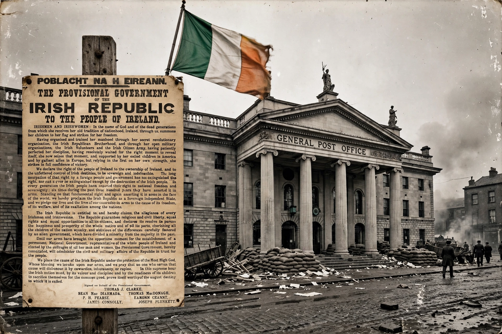

The Proclamation of the Republic (Irish: Forógra na Poblachta), also known as the 1916 Proclamation or the Easter Proclamation, was a document issued by the Irish Volunteers and the Irish Citizen Army during the Easter Rising in Ireland, which began on 24 April 1916. In it, the Military Council of the Irish Republican Brotherhood proclaimed Ireland's independence from the United Kingdom.
Patrick Pearse read the proclamation outside the General Post Office on Sackville Street (now O'Connell Street), Dublin, shortly after noon on Easter Monday. The document had been printed in secrecy at Liberty Hall on a damaged press with a shortage of type, producing distinctive mixed fonts.
Addressed to "Irishmen and Irishwomen," it declares "the right of the people of Ireland to the ownership of Ireland," announces a provisional government, guarantees "religious and civil liberty, equal rights and equal opportunities to all its citizens," and notably extends the promise to Irish women as voters — pledging suffrage at a time when women could not vote in British elections. It invokes "our dead generations" and six previous attempts at independence over 300 years.
The seven signatories — Thomas J. Clarke, Seán Mac Diarmada, Thomas MacDonagh, P. H. Pearse, Éamon Ceannt, James Connolly and Joseph Plunkett — were all executed after the Rising's suppression, transforming the document into a foundational text of the Irish state.